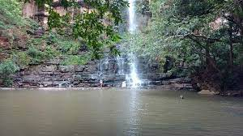
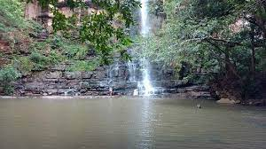

Pillamarri

Mallela Theertam waterfalls
Beechupally

Manyam Konda

Pillamarri |

Mallela Theertam waterfalls |
Beechupally |
Manyam Konda |
Koilsagar Dam |
Pillalamarri (Children's Banyan) or Peerlamarri (Saints Banyan) is an 800-year-old banyan tree located in Mahabubnagar, Telangana, India. The tree is spread over 4 acres. It is a major tourist attraction located 4 kilometers from Mahbubnagar city
Mallela Theertham is a waterfall located in the Nallamala Forest in Nagarkurnool, Telangana, India. The River Krishna flows through this forest. It is located around 58 km from Srisailam and 185 km from Hyderabad.
Beechupally in Jogulamba Gadwal district, Telangana, India, is one of the famous shrines for the god Hanuman (Anjaneya Swamy). It is located on the banks of Krishna River about 30 kilometers downstream from the Jurala Project. The shores of Krishna River at this location are noted for carrying out obsequies to the departed souls as per the Hindu custom.
Manyam Konda is located about 16 Kms from Mahaboob Nagar District head quarters towards Raichur. This is one of the important spiritual centers in Mahaboob Nagar District. In the ancient days sages / spiritual gurus like Narasimha Yogi, Ettepu Ramayogi, Kasirayalu, Veerappaiah, Yanumaddhasu were meditated here so that it is known as Munulakonda. During a passage of time it has been transformed to Manyam Konda.
Koila Sagar Project: It is a medium size irrigation project constructed at a cost of Rs. 80 crores during Nizam government period during 1945-48. It is located about 12 Kms from the Devarakonda Mandal head quarters in between Mahabubnagar and Raichur. This project was constructed to meet the irrigation needs about 12 thousands acres.